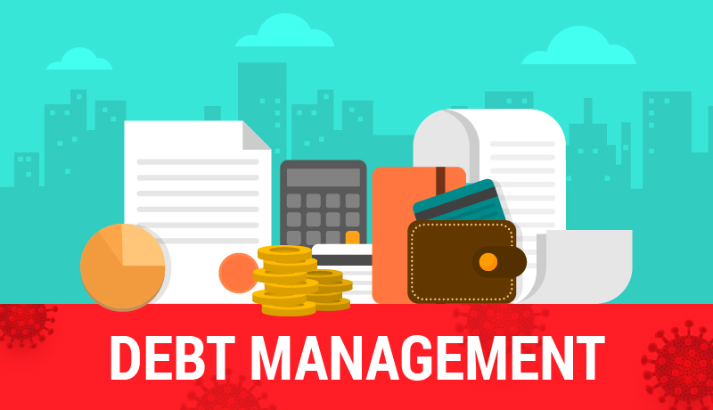

CashFlowAcademy
Home
Budgeting
Saving
Investing
Debt Management
Login
Guide to Debt Management

Dealing with debt can be overwhelming, but with careful planning and discipline, it is possible to regain financial control and work towards becoming debt-free. This guide provides a step-by-step approach to effective debt management:
Step 1: Assess Your Debt Situation
Start by understanding the extent of your debts. Make a list of all outstanding debts, including credit card balances, personal loans, student loans, and any other forms of debt. Note the interest rates, minimum monthly payments, and the total amount owed for each debt.
Step 2: Create a Budget
Develop a comprehensive budget that outlines your income and all necessary expenses, such as rent or mortgage, utilities, groceries, and transportation. Deduct these essential expenses from your income to determine how much money is available for debt payments.
Step 3: Prioritize Debt Repayment
With a clear picture of your finances, prioritize debt repayment. Consider using one of two popular strategies: the debt snowball or the debt avalanche. The debt snowball involves paying off the smallest debt first while making minimum payments on others. Once the smallest debt is paid off, move on to the next smallest debt. The debt avalanche, on the other hand, prioritizes paying off the debt with the highest interest rate first to save money on interest payments.
Step 4: Negotiate with Creditors
If you are struggling to make payments, reach out to your creditors and explain your situation. They may be willing to negotiate lower interest rates, reduced payment plans, or debt settlements. Communicating with creditors shows that you are proactive about resolving your debt issues.
Step 5: Cut Expenses and Increase Income
To free up more money for debt repayment, consider cutting unnecessary expenses from your budget. Look for areas where you can reduce spending, such as dining out, entertainment, or subscription services. Additionally, explore opportunities to increase your income, such as taking on a part-time job, freelancing, or selling items you no longer need.
Step 6: Build an Emergency Fund
As you work towards debt repayment, it's essential to establish an emergency fund. Having savings set aside for unexpected expenses can prevent you from accumulating more debt during financial emergencies.
Step 7: Avoid Taking on New Debt
During your debt management journey, refrain from taking on new debt. Avoid using credit cards for unnecessary purchases and focus on using cash or your debit card.
Step 8: Seek Professional Help if Necessary
If your debt situation becomes unmanageable, consider seeking help from a reputable credit counseling agency. They can provide personalized advice, negotiate with creditors on your behalf, and help you create a sustainable debt management plan.
Remember, debt management is a gradual process, and it requires discipline and determination. By following this guide and staying committed to your financial goals, you can regain control of your finances and pave the way towards a debt-free future.